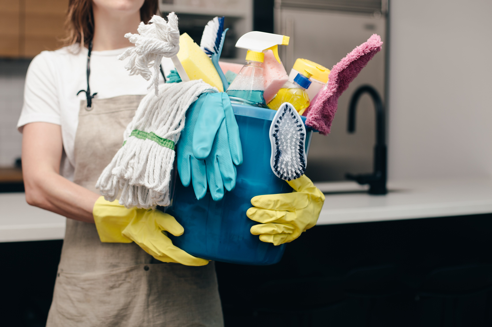
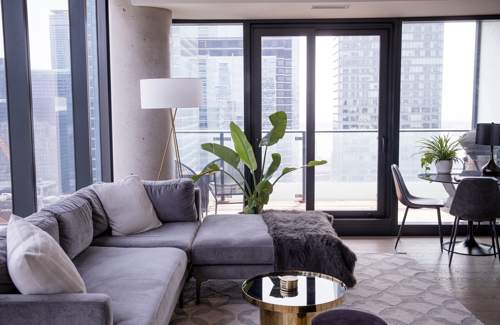
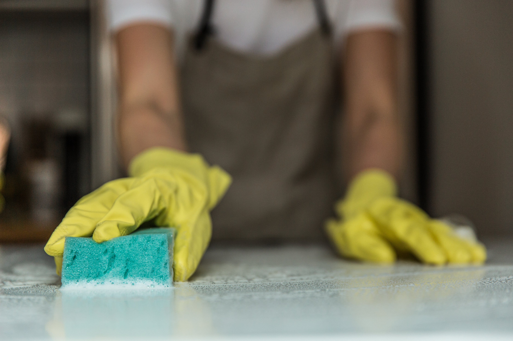
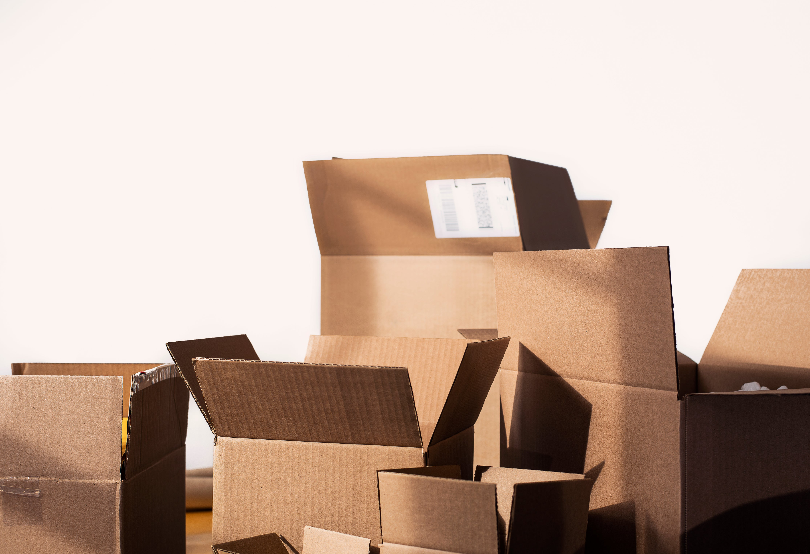

01Регулярне
Регулярне
прибирання
Кухня, санвузол, підлога та пил. Підтримуємо порядок щотижня або раз на два тижні.
Дізнатися більшеПрибирання житлових просторів
Київ та передмістя
Ми пропонуємо якісний сервіс та індивідуальний підхід до кожного клієнта.
Дізнатися більше
01 / Послуги
Для звичного тижня, великого прибирання або нового початку.Ще 8 послуг ↓

Кухня, санвузол, підлога та пил. Підтримуємо порядок щотижня або раз на два тижні.
Дізнатися більше
02Коли потрібна особлива увага: від кухонних фасадів до важкодоступних кутів і міжплиткових швів.
Дізнатися більше
Залишити попередню оселю чистою. Або почати новий етап у підготовленому домі.
Дізнатися більше02 / Вартість
Кожне помешкання унікальне. Зв’яжіться з нами, щоб дізнатися більше.
Дізнатися більше03 / Наш підхід
Це завжди особисте.
Ми це розуміємо.
Ми любимо свою справу та прагнемо перевершувати ваші очікування.
Турбота починається з деталей.Наші спеціалісти — справжні майстри своєї справи.
Якість та відповідальність — наші головні пріоритети.
Робимо все, щоб ви залишилися задоволені сервісом.
04 / Наступний крок
Розкажіть про ваше помешкання.
Допоможемо обрати потрібну турботу.